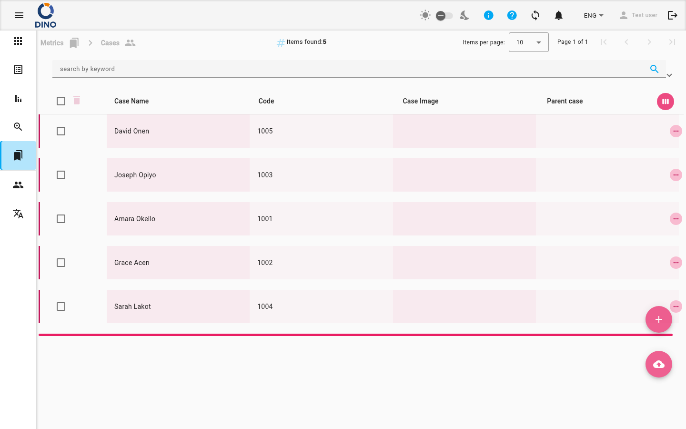

Casi
La pagina Casi offre uno spazio di lavoro centralizzato per tracciare e gestire i singoli casi. Ogni caso è un record strutturato che può contenere nome, codice, immagine, relazione con il caso padre, note e attributi aggiuntivi. Puoi creare nuovi casi, modificare quelli esistenti, visualizzare i dettagli, eliminare record ed esportare l'elenco dei casi, tutto da un'unica tabella interattiva.

Panoramica della tabella
La tabella principale mostra per impostazione predefinita le seguenti colonne:
- Nome caso – Il nome assegnato al caso (ordinabile).
- Codice – Un codice generato dal sistema o assegnato manualmente (sola lettura dopo la creazione).
- Immagine caso – Un file immagine caricato che rappresenta il caso.
- Caso padre – Il nome di un eventuale caso padre a cui appartiene questo caso.
Colonne aggiuntive (come ID, Note, Data di creazione e Attributi aggiuntivi) sono nascoste per impostazione predefinita. Puoi personalizzare quali colonne visualizzare cliccando sul pulsante Personalizza colonne (icona a forma di occhio) nell'intestazione della tabella.
Azioni su un singolo caso
Sul lato destro di ogni riga trovi le icone per le seguenti azioni:
- Modifica – Apre una finestra di dialogo per modificare i dettagli del caso.
- Stampa – Genera una scheda PDF stampabile per il caso.
- Visualizza – Apre una finestra di dialogo in sola lettura per ispezionare le informazioni del caso.
- Elimina – Apre una finestra di dialogo di conferma per rimuovere definitivamente il caso.
Clicca sull'icona Altro (tre punti verticali) per vedere tutte le azioni disponibili se alcune sono nascoste.
Azioni in blocco
Seleziona più casi utilizzando le caselle di spunta nella prima colonna. Quando è selezionato almeno un caso, nella parte superiore della tabella appare un pulsante Elimina. Puoi eliminare tutti i casi selezionati in una volta sola.
L'eliminazione in blocco è permanente
I casi eliminati non possono essere recuperati. Usa l'eliminazione in blocco con cautela.
Creazione di un nuovo caso
- Clicca sul pulsante di azione fluttuante Aggiungi nuovo (icona del più) in basso a destra nella pagina.
- Si aprirà una finestra di dialogo. Compila i campi obbligatori:
- Nome caso – Inserisci un nome descrittivo.
- Codice – (Opzionale) Fornisci un codice univoco. Questo campo è in sola lettura dopo la creazione.
- Immagine caso – Carica un file immagine.
- Caso padre – Opzionalmente collega questo caso a un caso padre esistente.
- Note – Aggiungi eventuali note pertinenti.
- Clicca su Salva per creare il caso.
Importazione di casi
Usa il pulsante di azione fluttuante Importa (icona di caricamento nuvola) per caricare in blocco casi da un file. I formati supportati sono definiti dall'amministratore di sistema.
Filtraggio e ricerca
La barra di ricerca in alto ti permette di filtrare i casi per:
- Parola chiave – Cerca in tutti i campi visualizzati.
- Intervallo di date – Filtra per data di creazione (Da / A).
- Filtri aggiuntivi – Seleziona da filtri predefiniti come metrica, stato, utente o gruppo di utenti.
Dopo aver applicato i filtri, puoi salvare la combinazione come preset per un riutilizzo rapido. Per salvare un preset:
- Apri il pannello dei filtri.
- Inserisci un nome nel campo preset.
- Clicca su Salva.
Per applicare un preset salvato, selezionalo dall'elenco e clicca su Applica.
Esportazione di casi
Clicca sul pulsante Esporta (icona di download nuvola) nella barra dei filtri. Scegli il formato di esportazione (ad es. CSV o Excel) e seleziona quali colonne includere. Il file esportato conterrà tutti i casi attualmente visibili, rispettando gli eventuali filtri attivi.
Personalizzazione della tabella
- Ordina – Clicca su qualsiasi intestazione di colonna ordinabile (ad es. Nome caso, Data di creazione) per ordinare la tabella.
- Selettore colonne – Apri la finestra di dialogo del selettore colonne per mostrare o nascondere colonne.
- Espandi righe – Alcuni casi possono avere sotto-elementi (altri casi collegati come dettagli). Clicca su una riga per espanderla e vedere i record correlati.
La pagina mostra anche un percorso breadcrumb in alto per consentire la navigazione di ritorno alla sezione principale delle Metriche.
Pagine correlate
- Panoramica metriche – Torna alla dashboard principale delle metriche.
- Aree tematiche – Organizza i casi per area tematica.
- Luoghi – Associa i casi a posizioni geografiche.
- Organizzazioni – Collega i casi alle organizzazioni.
- Progetti – Raggruppa i casi sotto progetti.